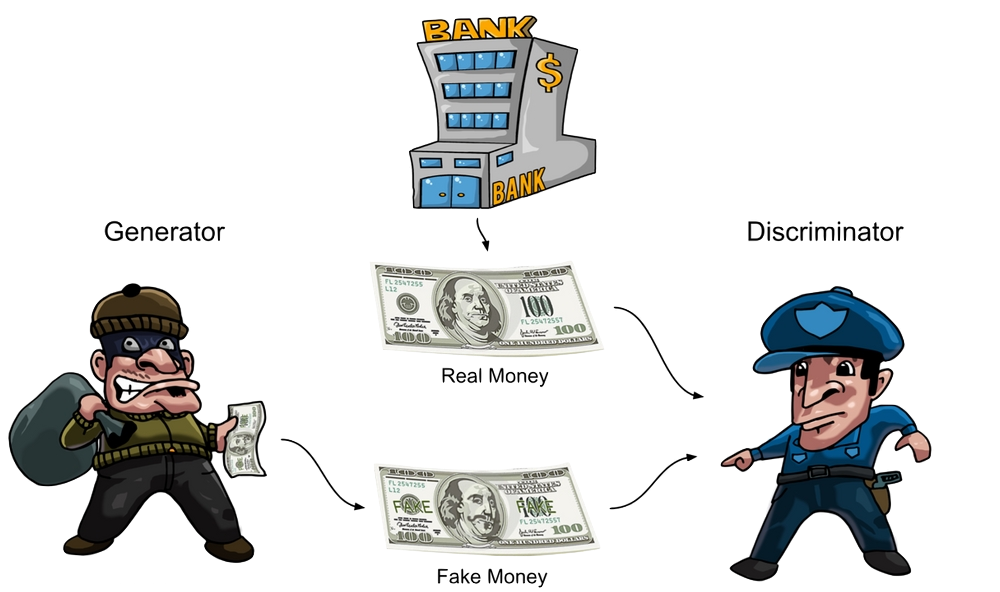

GANs
GANs
In this chapter, we'll learn about Generative Adversarial Networks (GANs), a type of artificial intelligence that can create all kinds of things without any help from humans.
What is a GAN?
You know that humans can draw pictures, film videos, write stories, and compose music. You might even do some of these things yourself! But did you know that artificial intelligence programs called GANs can do these things too? Let’s look at some examples.
photo
video
text
audio
How do GANs work?
A GAN is made up of two different programs called the generator and the discriminator.
The generator and discriminator are in a constant battle - they are enemies, not friends! The generator is constantly creating new things and keeps trying to trick the discriminator into thinking the things it creates are real, while the discriminator is trying to catch any differences between what the generator is creating and things that actually exist in the real world.
Here’s how we might think of the generator and the discriminator working together:
The generator is like a counterfeiter. A counterfeiter makes fake money to try to fool people into thinking it's real.
The discriminator is like the police. The police can compare fake money from the counterfeiter to real money from the bank and tell the difference.

The counterfeiter learns from its past mistakes and improves its fake money to look even more real.

To make sure that the counterfeiters don't get away with making fake money, the police have to get even better at telling the difference between fake money and real money from the bank.
Play with GANs!
Let's have some fun with GANs.